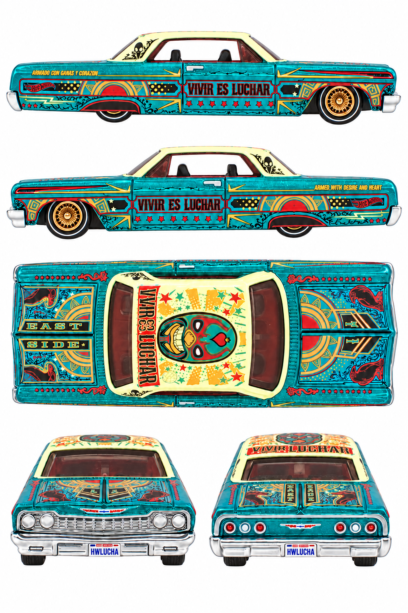

Both side profiles passed the level-camera review.
1024 × 1536 · v7
Right side: real reference. Left side: real reference.
Finalized by editing an earlier generated sheet. The final prompt and original photographs are retained; superseded working images were removed.
Final prompt · Review · Car guide
Both physical side profiles independently pass the strict level-camera visual check. Both physical sides have real exact-release photo evidence; generated reprojection remains synthetic. All five panels pass the visual check for a white background without external ground shadows. Right quarter has ARMADO CON GANAS Y CORAZON; left has ARMED WITH DESIRE AND HEART. Both doors keep VIVIR ES LUCHAR normally readable. EAST/SIDE trunk lettering orientation in the overhead remains inaccurate relative to the real photo; two focused correction attempts were rejected for worse results. Use the original trunk photo when authoring the final texture. Roof lettering and fine ornamentation remain approximated; front/rear panels retain elevated cameras. No numerical calibration or 3D reconstruction test.